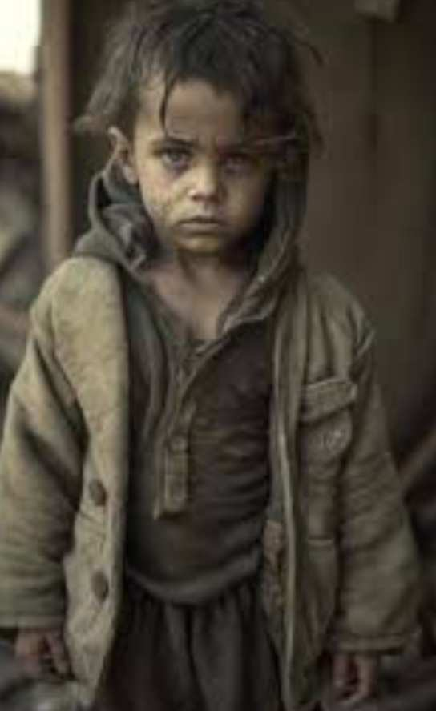

In the war-torn landscapes of an unnamed region, the life of young AMIR became a haunting narrative of misery, all stemming from the profound loss of his parents in the ravages of conflict.
Amir's parents, SARA and MOHAMED, were once the anchors of his world, providing love and stability in times of peace. However, the harsh winds of war swept through their lives, leaving AMIR orphaned and adrift in a sea of despair. The once-vibrant tapestry of family was torn apart, replaced by the cold threads of grief.
The echoes of bomb blasts and the acrid scent of smoke became the backdrop to Amir's bleak existence. The streets he once played on became fraught with danger, and the alleys echoed with the painful memories of his parents' laughter, now silenced forever.
Amir's quest for a semblance of normalcy became a daily struggle for survival. The makeshif shelter he called home offered little refuge from the biting cold and constant fear. Every passing day was a testament to the void left by the absence of parental guidance and the stark reality of navigating a world defined by conflict.
Education, once a beacon of hope, now seemed like a distant dream for Amir. The war had not only robbed him of his family but also snatched away the chance for a brighter future. The innocence of childhood was replaced by the harsh realities of loss, displacement, and a constant battle against the demons of despair.
Amir's story is a poignant reminder of the countless children worldwide who endure the misery of war-induced orphanhood. It beckons the global community to recognize the profound impact of conflict on the lives of innocent children, urging concerted efforts to provide support, education, and hope to those left navigating the shadows of loss and uncertainty.